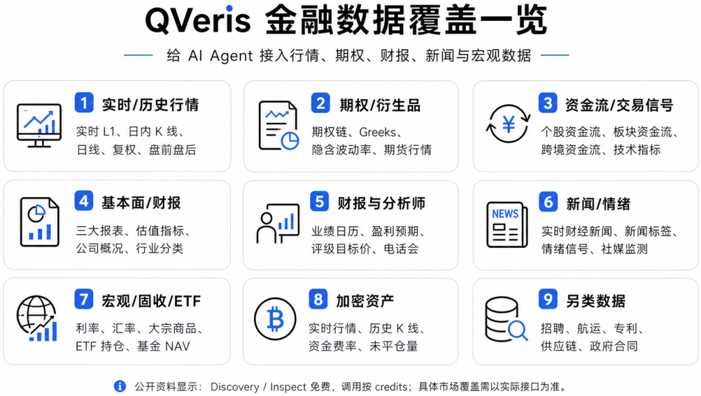
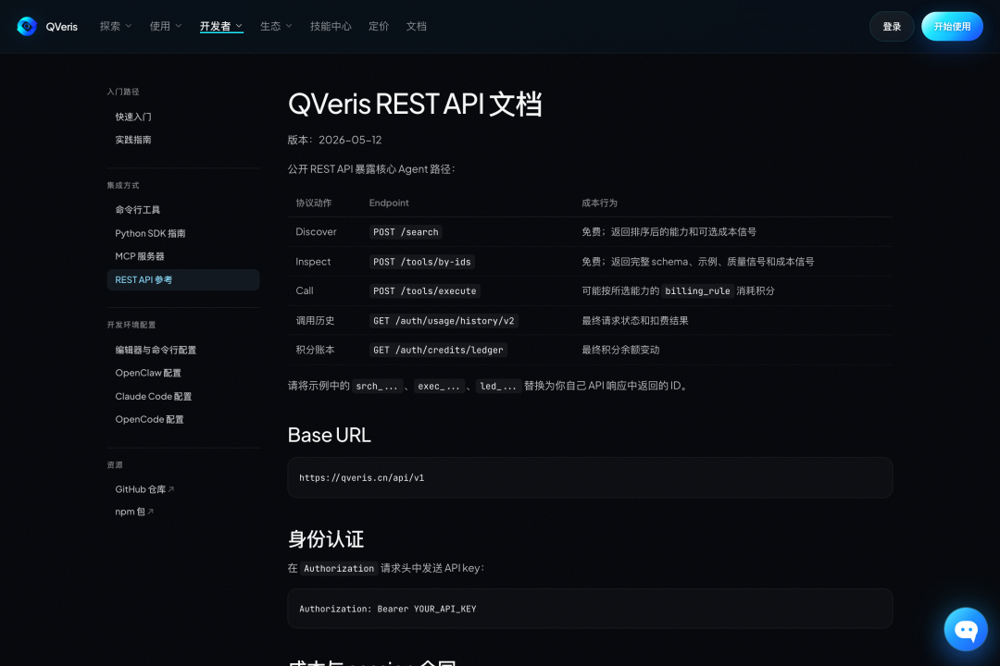
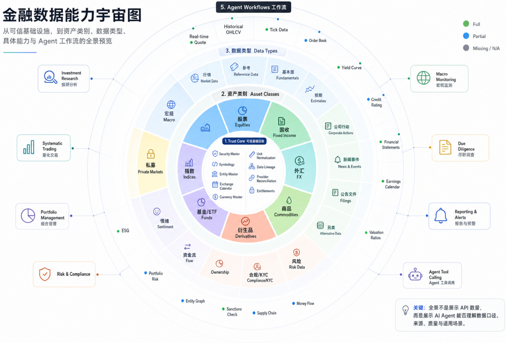
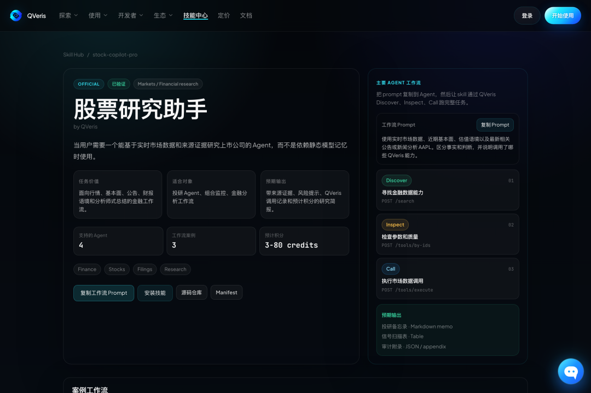

QVeris · 产品介绍
很多人已经习惯问 AI：茅台怎么看？寒武纪还能不能追？今天 A 股有什么异动？
它能聊三千字，语气还很像研究员。
问题是，它可能根本不知道今天有没有放量、资金往哪流、公告刚刚说了什么。
没有实时行情、资金流、财报、公告和新闻，AI 再会讲逻辑，本质上还是一个坐在旧资料堆里的分析师。
给 AI Agent 做金融能力，第一步不是写更长的 prompt，而是先把市场数据接上。
QVeris 做的就是这件事：把分散在不同 provider、不同 API、不同参数格式里的能力，变成 Agent 能发现、检查、调用的一套入口。

以前接一个金融 API，要先找供应商、看文档、对字段、写适配、处理报错。对人来说，这是工程活；对 Agent 来说，这是它能不能真的行动的前提。
QVeris 的公开文档把这条路径拆成三步：Discover、Inspect、Call。
Discover 是先用自然语言找能力。Inspect 是调用前看参数、schema、成本和质量信号。Call 才是真正执行。

这一步很重要。很多金融 Agent 翻车，不是模型不会分析，而是工具选错了、参数猜错了、数据源没核验。QVeris 的价值不是让你少写几行代码，而是把"找什么工具、怎么调用、花多少钱、调用是否成功"变成一套可审计流程。
目前 QVeris 中文站的能力地图显示，金融域已有 155 个注册能力、153 个可评估能力、126 个已覆盖能力，评估过 60 个供应商。覆盖方向包括量化策略、投研分析、风控合规、宏观与固收、加密资产和另类信号。

拆到具体能力，和普通用户最相关的是这些：
实时 L1 行情、分钟级 K 线、日线行情、复权价格；
个股资金流、板块资金流、跨境资金、技术指标；
期权链、Greeks、隐含波动率、期权主数据、期货行情；
利润表、资产负债表、现金流量表、估值指标；
一致预期、分析师评级目标价、实时财经新闻、新闻标签和情绪信号。
一个 Agent 不只可以问"今天涨跌多少"，还可以把行情、资金、新闻、财报和期权信号放在一起综合分析。
接入方式也不复杂。
第一种，国内用户可以走 QVeris 中文站注册，拿 API Key。官方文档写得很直接：Base URL 是 https://qveris.cn/api/v1，在请求头里带 Authorization: Bearer YOUR_API_KEY。
第二种，走 CLI。适合开发者和自动化脚本。
大致流程是：先安装 CLI，再执行 qveris login；然后用 qveris discover "A股实时行情" 找能力，用 qveris inspect 1 检查参数，最后再用 qveris call 发起真实调用。
这里要注意，最后一行参数只是示意，真实参数要以 inspect 返回的 schema 为准。金融数据最怕"看名字猜字段"，这也是 QVeris 把 Inspect 放在 Call 前面的原因。
第三种，走 MCP。适合 Cursor、Claude Code、OpenCode 这类编程 Agent。把 QVeris MCP server 配进客户端，Agent 就可以在对话里先 discover，再 inspect，再 call。

费用上呢？
发现 / 检查工具免费
注册自动获得 API 密钥和 1000 积分；真正调用时，根据具体能力的 billing rule 消耗 credits。
另外分享好友可的双倍积分。
先不用买昂贵终端，也不用一家家申请数据源，可以免费完成发现、检查和初步试用；能不能长期高频使用，要看具体接口、积分消耗和你的使用场景。
AI 金融助手真正的进步，不是它说得越来越像分析师，而是它终于开始知道自己引用了什么数据、为什么用这个工具、这次调用花了多少钱。
不要一上来就让 Agent 给你选股。先让它做三件小事：每天整理自选股异动，每周汇总资金流和新闻，每次财报后把估值、预期和公告放在一起对照。
如果这三件事做稳了，它才有资格继续往策略、回测、组合监控走。
快去试试吧，直接把这句话丢给你的ai👇
接入qveris.cn 或 qveris.ai 获取A股数据试试。
关于 QVeris AI
QVeris AI 聚焦于 Agent 时代的行动基础设施层，致力于构建 AI 可理解、可调用的"能力互联网"。
QVeris 当前定位：面向智能体的搜索和行动引擎，让智能体能够通过语义搜索发现并一键调用 10,000+ 真实且已验证的工具。
产品矩阵：
QVeris CLI — 终端中的万能 API 入口
QVeris MCP Server — IDE 智能体的工具网关
QVerisBot — 基于 OpenClaw 的生产级 AI 助手
QVeris REST API — 标准 HTTP 接口，适配任何语言和平台
官网：https://qveris.cn
GitHub：
https://github.com/QVerisAI/QVerisAI
加入飞书群体验👇
觉得有用？ 点个❤️在看，转给还不知道的朋友 关注「QVeris」，获取更多 AI 数据工具资讯